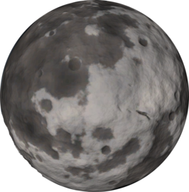

Dres
Dres is the fifth planet in the Kerbol star system. It is located between Duna and Jool in a somewhat eccentric and inclined orbit. It is considered to be the Ceres analog for the game. It is similar to Moho and Eeloo in that it has no atmosphere and no natural satellites (aside from a ring system of asteroids). Dres has the least gravity of any planet in the Kerbol system. Dres is considered a dwarf planet by the game because it has not "cleared its neighborhood"; in other terms, it has asteroids in close proximity.
In- Game Description:
Dres is a very small planet. It was the first planet considered to be a dwarf. It’s orbit is highly irregular and together with it’s size it took a long time to discover since half the time it was not where scientists expected to find a planet. Due to its nature of frequenting the bad parts of space, this dwarf planet was officially labeled as “Not to be trusted” by the scientific community.
Home Page